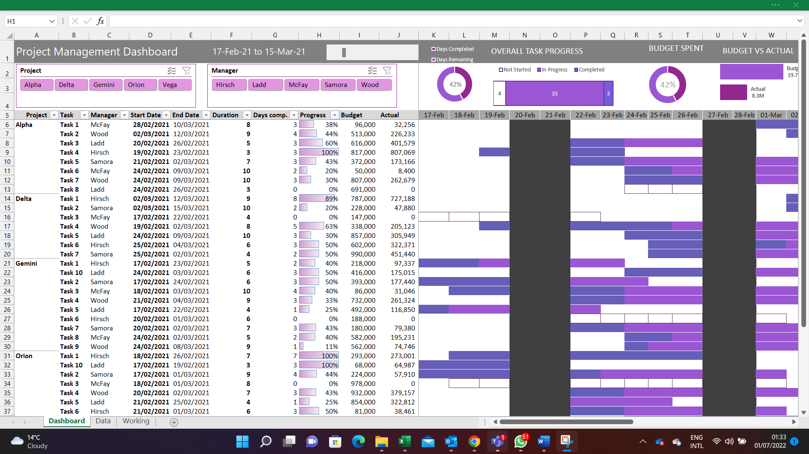
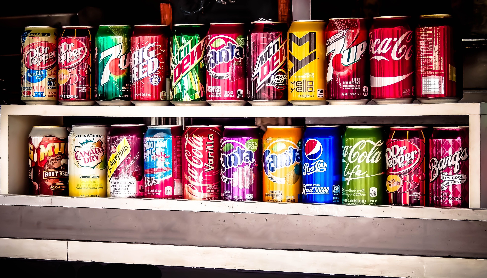

In this project, I focused on visualizing sales data for an online store, highlighting key metrics and insights. The analysis included identifying profitable and unprofitable customers, examining the trend of profits over time, and exploring sales categories.
To provide a comprehensive overview of the store's performance, I also used charts and map visuals to visualize the performance of different locations. This allowed me to gain a deeper understanding of sales patterns and trends across different regions.
Overall, the visualizations provided valuable insights that can help inform business decisions and drive growth for the online store. By presenting complex data in a clear and easy-to-understand format, I will be able to help stakeholders gain a deeper understanding of the store's performance and identify areas for improvement.


In this project, my objective was to visualize the results of the 2015 and 2019 Nigerian Presidential Elections using interactive maps. My aim was to create clear and informative visualizations that would help users understand the election results and identify trends and patterns.
To achieve this goal, I sourced data from the Independent National Electoral Commission (INEC) and used various visualization techniques to create interactive maps. These maps allowed users to explore the results of the elections by state and included choropleth maps to represent the data.
The interactive maps I created provided a valuable tool for stakeholders to analyze and understand the results of the Nigerian Presidential Elections in 2015 and 2019. By presenting the data in an engaging and accessible format, I was able to help stakeholders gain a deeper understanding of the election results and identify areas for further investigation. Overall, my visualizations helped to facilitate data-driven decision-making and provided a more comprehensive view of the election results than traditional data analysis methods.

In this project, my focus was on visualizing the cost of Airbnb accommodations across different neighbourhoods in America. My objective was to showcase the number of hosts and listings in each neighbourhood, while also highlighting changes in pricing over time.
To achieve this goal, I collected data on Airbnb listings from various sources and used visualization techniques to create an informative and engaging representation of the data. I employed timelines to show price changes over time and used maps to display the number of hosts and listings in each neighbourhood.
Through my visualizations, I was able to provide stakeholders with a clear and comprehensive understanding of the cost of Airbnb accommodations in different neighbourhoods across America. By presenting the data in an easily digestible format, I enabled stakeholders to identify trends and make data-driven decisions. Overall, my visualizations helped to provide a more accurate and complete picture of the Airbnb market in America and helped stakeholders to understand the relationship between pricing, supply, and demand.

This is an interactive Excel dashboard designed for project management, featuring a Gantt chart. The dashboard displays the current status of projects, including their due dates, the tasks assigned to each manager, and the start and end times for each task. Additionally, the dashboard includes information about project budget and actual cost, as well as budget spending.

This is an Excel dashboard that presents monthly sales data and sales growth rates for each month, as well as sales data per location in America using a map to indicate areas with high and low sales. The dashboard also includes key indices that can be easily filtered by region, retailer, and brand.